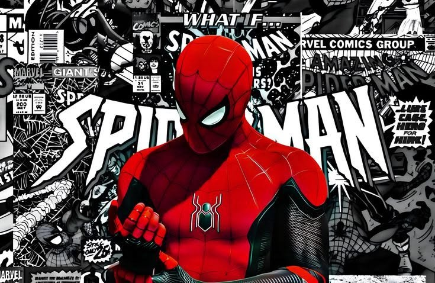
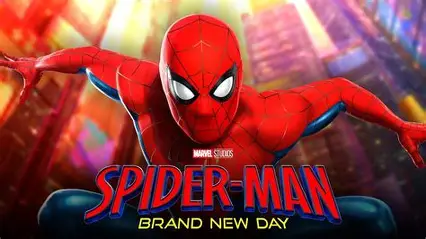

Spider-Man: Brand New Day follows Peter Parker as he starts over after the world forgets his identity, trying to live a normal college life while protecting New York on a more street-level scale. When a new threat emerges, he allies with unexpected partners, facing moral dilemmas and personal sacrifice. With Destin Daniel Cretton directing and a strong ensemble cast, early buzz praises its fresh emotional tone and grounded action, making it a highly anticipated MCU entry.

Spider-Man: Brand New Day" is the next installment in the Spider-Man film series, following the events of "Spider-Man: No Way Home." Directed by Destin Daniel Cretton, the film will explore Peter Parker's life as he navigates college while dealing with new threats that endanger his friends and loved ones